成人零基础
¥200 / 节
从认谱和手型开始，不预设你有音乐基础。前三节解决「能不能连续弹完一段」，之后按你想弹的曲子走。
THE ROOM
上课的地方，天河一栋老楼里，地铁口步行五分钟。以下是演示素材，不是真实场地。
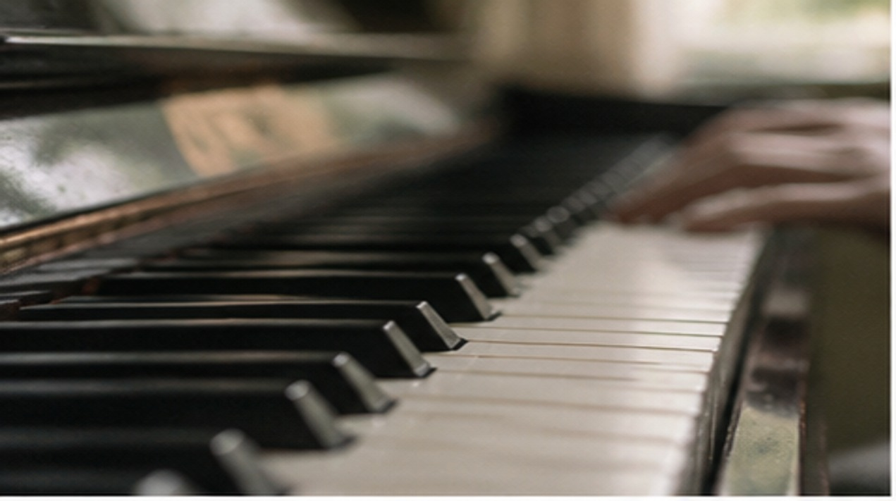
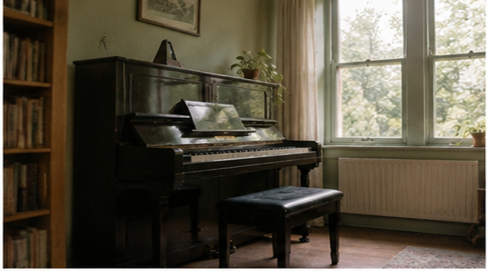
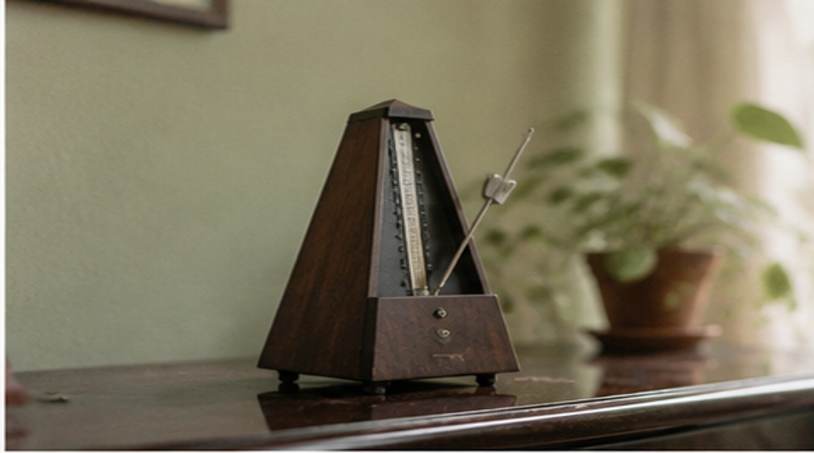
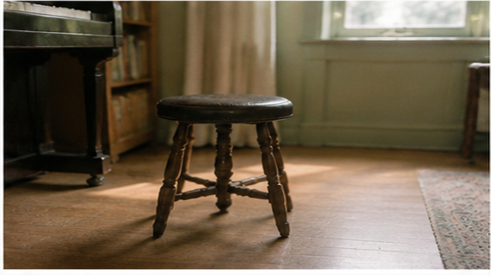
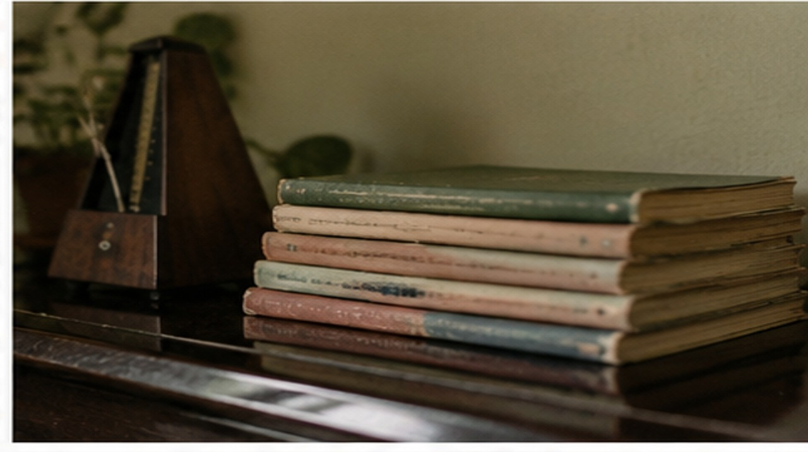
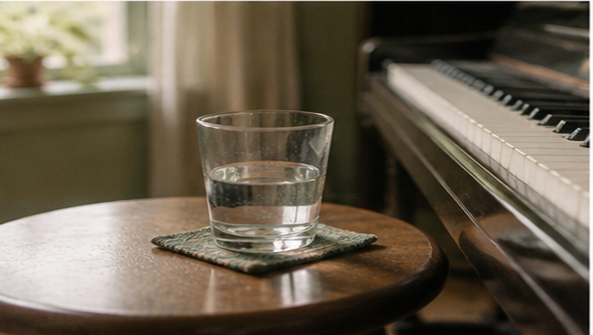
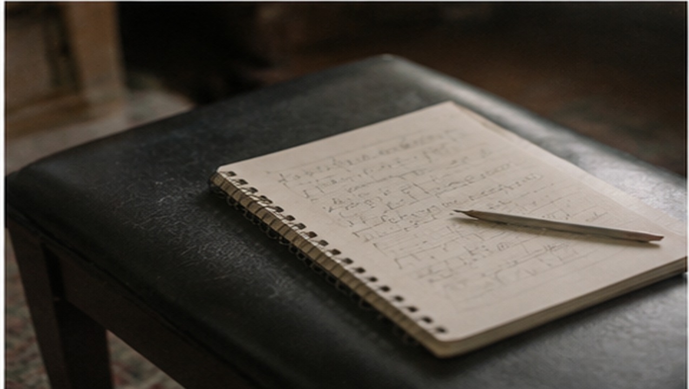
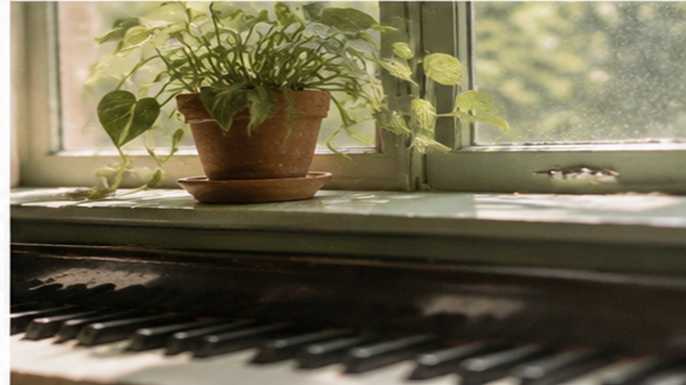
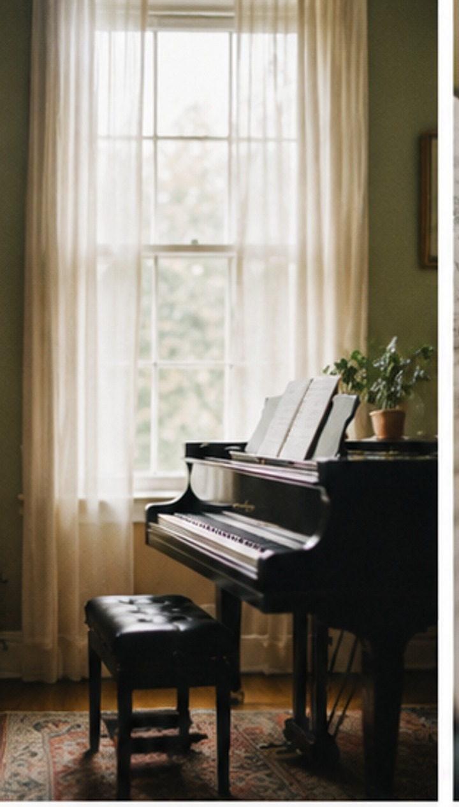
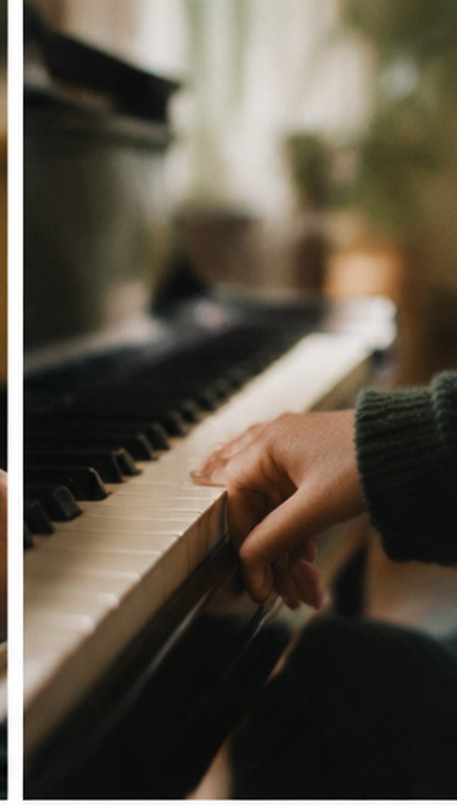
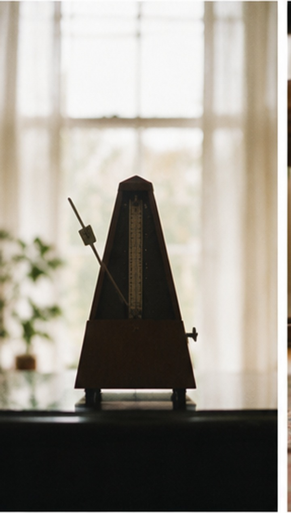
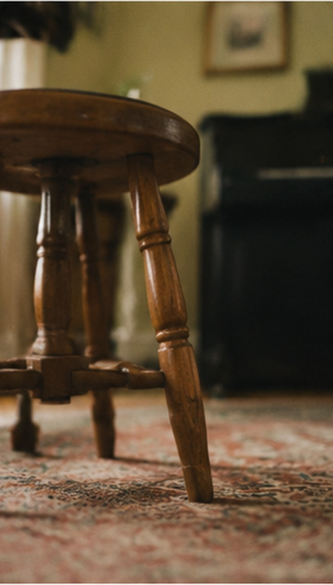
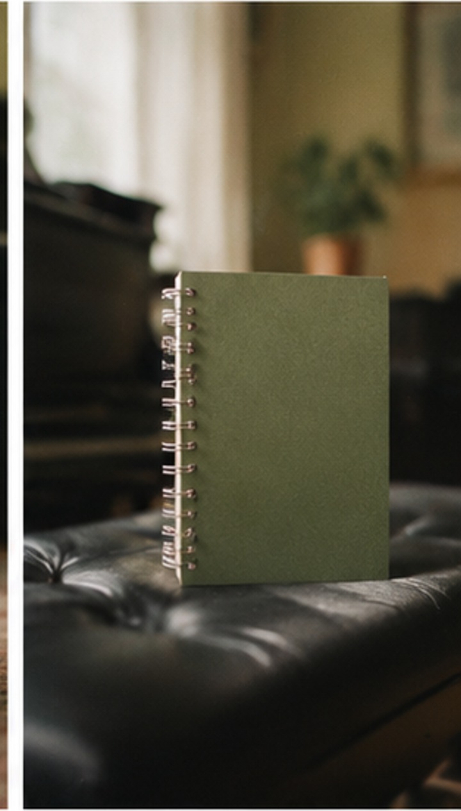
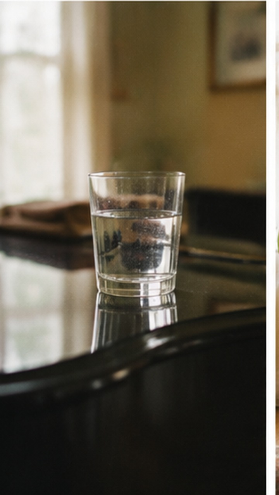
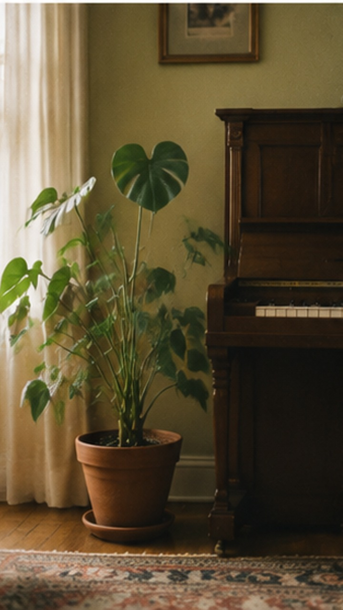
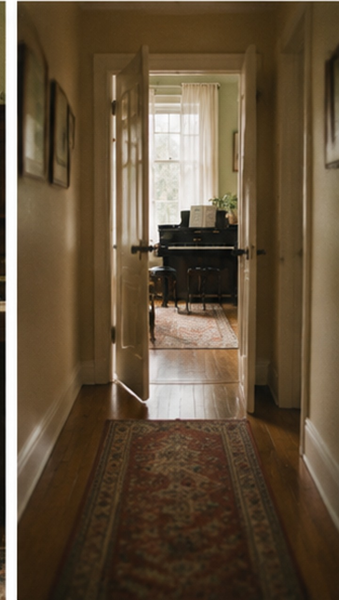
WHAT GETS STUCK
WHAT I TEACH
按次收费，不卖课包。上课前说清楚要达到什么，上了几节算几节。
¥200 / 节
从认谱和手型开始，不预设你有音乐基础。前三节解决「能不能连续弹完一段」，之后按你想弹的曲子走。
¥260 / 节
按考级评分标准拆练习曲，先把技术难点单拎出来练，再串完整首。考级报名与评委打分我不保证，只保证练到位。
¥180 / 节
你已经有曲子了，只想把某一段练顺，或者把一首自己的曲子改编成能弹的版本。上课前发我谱子，我先看一遍。
HOW I TEACH
第一节课我不发新教材。先听你现在卡在哪、想弹什么、手型有没有问题，然后才排后面的内容。
不承诺几节课考过几级，也不拿别人家孩子的进度吓唬你。练成什么样取决于每天练多久，这话我每次都会说。
每节课结束给一段文字：这节练了什么、下节要做什么、家里练哪几遍。你能自己看，不用每次问我。
HOW TO START
先试一节，试完不合适就不继续，没人劝你。
你现在学到哪、想弹什么曲子、每周能练几天。
30 分钟，我听一下你的程度，说清之后能教到什么程度。
按次约课，不买课包。想停随时停，提前一天说就行。
FAQ
能，成人零基础是最常见的。第一节课从手型和认谱开始，前三节的目标就是能连续弹完一小段。
来上课用琴房的琴就行。家里有琴最好，没有也不影响上课，只是练琴得在我这儿或者另租琴房。
200 元一节，50 分钟。按次算，上几节付几节。买课包我不做——怕的是您还没学就跟人上了几十节，那对两边都不好。
不能。我只保证按评分标准把技术难点练到位，剩下的取决于你自己练的时间和考场发挥。
CONTACT
把现在学到哪、想弹什么发我，我先回一句能不能教。
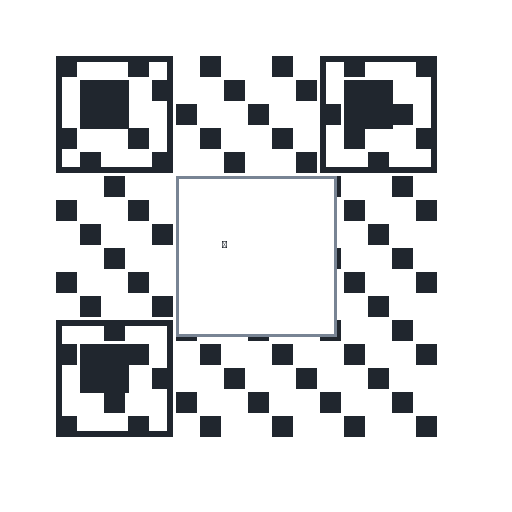